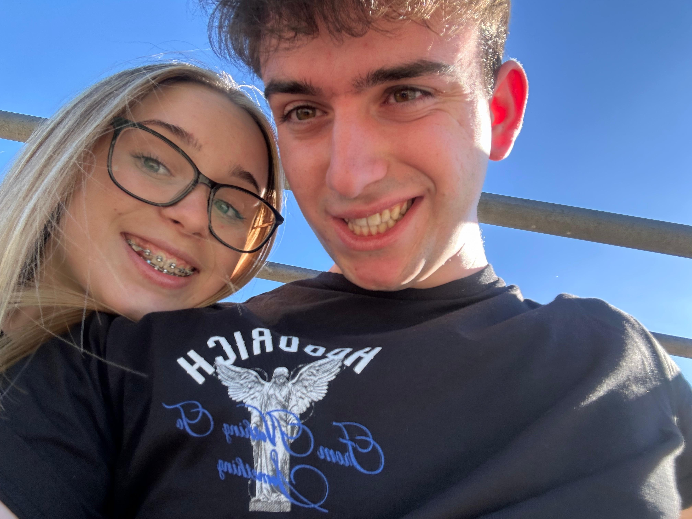
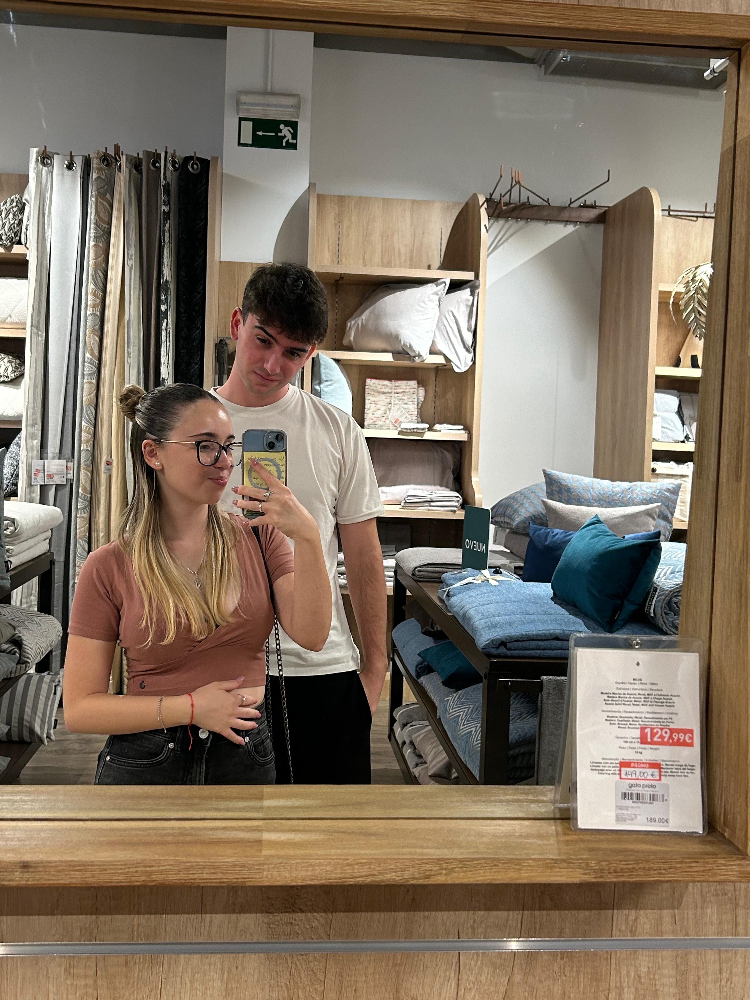

Algunas de nuestras fotos 🌟



Hola mi amor, esto iba a ser una carta pero como he tenido más días he pensado en algo diferente y aquí estamos con esta mini página que espero que te guste que aunque parezca que no lleva curro. Te amo mi amor. 💖
Aquí estoy escribiendote esto mientras escucho a Cano pensando en como será el concierto contigo al lado sabiendo que cada letra de sus canciones representa perfectamente lo que siento por ti, en geenral que te quiero mucho y espero que con esta tontería lo veas un poco. La verdad que en el audio del otro día más o menos ya te dije mucho, no todo porque podría pasarme toda la vida diciendote lo mucho que te quiero, pero con esta "carta" quería recordartelo un poco otra vez.
Tu me dijiste que gracias en la carta, pues ahora soy yo el que te da las gracias, gracias por demostrar al jorge de 16 años que el amor si existe y que es bonito, que si que existe alguien que te cuide y me trate como nunca me habian tratado en la vida, solo tenía que ser paciente y esperar 3 años para conocer al amor de su vida y que desde el momento que la conociera ya todo iria en auge y no iba a parar.
Gracias por hacerme ver que todo eso qyue yo siempre decía que nadie haría por mi lo que yo hago por ellos era falso, porque tu me das 3 veces más de lo que yo te doy, sin yo pedirte nada recorres tierra y mar por mi, que tienes mil detalles conmigo, que cada semana me sorprendes con algo ❤️